Codex Rate Manager
利用者マニュアル
残量を確認する。復帰を通知で知る。
いまの画面を、そのまま共有する。
01 / はじめて使う
Codexの5時間枠と週間枠の残量を確認し、残量低下・上限到達・各枠の復帰を通知するアプリです。
- Codex CLIを使える状態にする。普段利用するWindowsユーザーで、Codex CLIにログインしておきます。このアプリにはログイン画面はありません。
CodexRateManager.exeをダブルクリック。ソース実行用のPythonは不要です。EXEは継続して使う場所へ置いてください。- 接続と残量を確認。メイン画面の接続表示が更新され、5時間・週間の値が表示されるのを待ちます。必要なら「今すぐ更新」を押します。
- 必要な通知を設定。「設定」でWindows通知やDiscord通知を選びます。通常は「保存」で反映します。
接続できない場合は、「困ったときは」の接続確認を参照してください。
02 / 画面の見方
{kind=link}
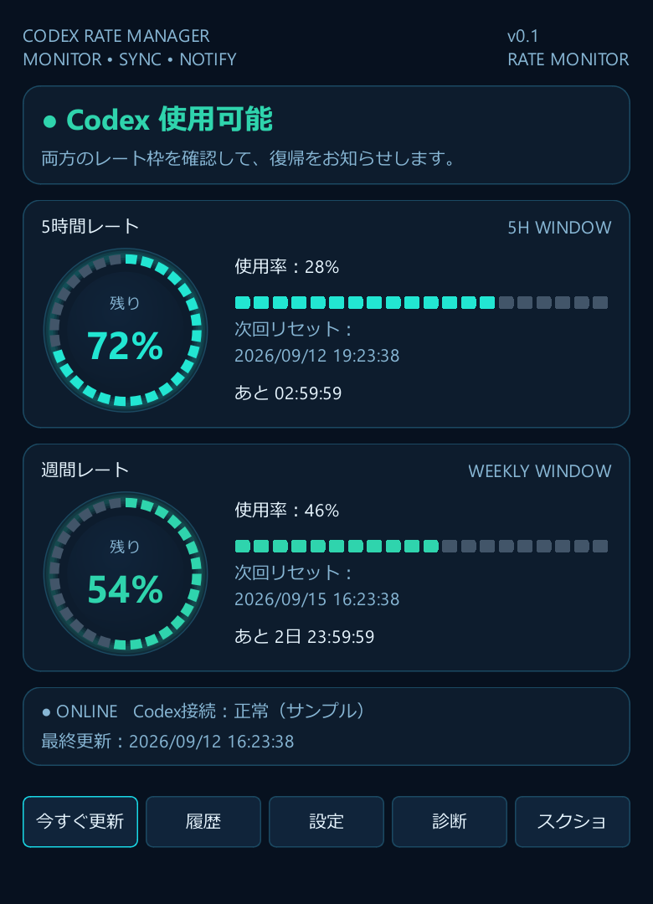
上から順に確認
- 状態：「Codex 使用可能」「レート上限」「接続待ち」など、現在の判定を表示します。
- 5時間レート：リング内の数字は残量です。右側の「使用率」と取り違えないようにします。
- 週間レート：5時間枠とは別の制限枠です。両方の残量を確認してください。
- 次回リセット：予定日時と、それまでのカウントダウンです。
- 接続・最終更新：値をいつ取得したか確認できます。
| 下部のボタン | できること |
|---|---|
| 今すぐ更新 | 通常の監視間隔を待たず、最新情報の取得を要求します。 |
| 履歴 | レート・通知・イベントの履歴を開きます。 |
| 設定 | 監視、通知、外観などを変更します。 |
| 診断 | 接続状態などの診断情報を確認します。 |
| スクショ | メイン画面内部を画像としてクリップボードへコピーします。 |
上限に達した画面の例
{kind=link}
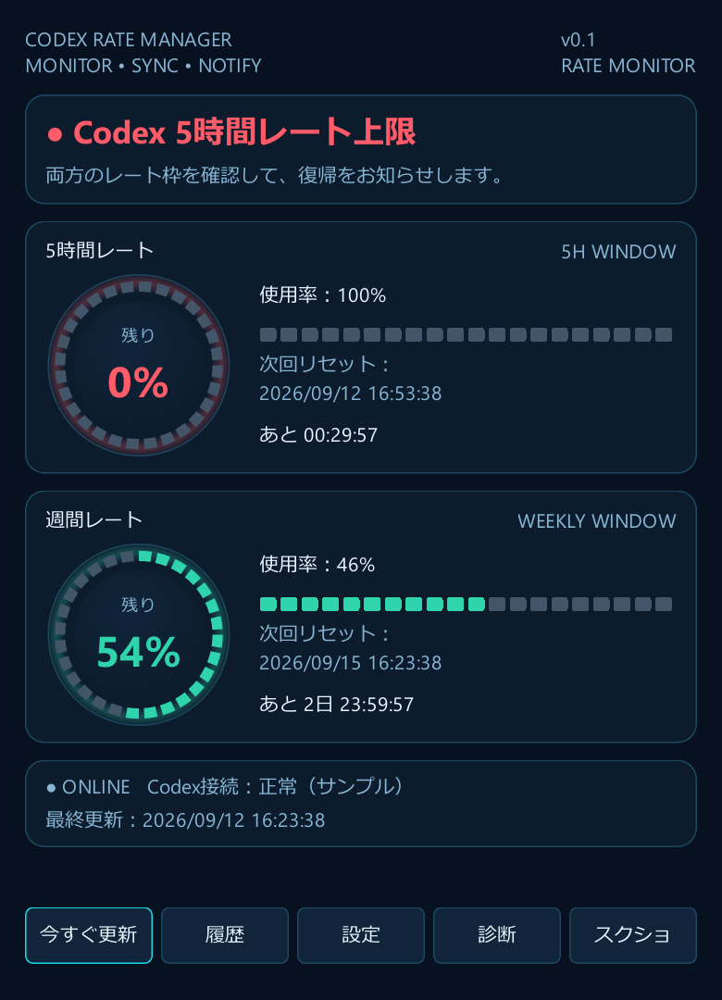
03 / タスクトレイへ格納・終了する
通常、ウィンドウ右上の × を押すと、画面を閉じてタスクトレイに常駐します。アプリが動いている間は監視を続けます。
- Windowsの通知領域でアプリのアイコンを探します。隠れている場合は、隠れたアイコンを表示するボタンを開きます。
- アイコンのクリック、または右クリック → 「Codex Rate Managerを開く」 で画面を戻します。
- アプリを完全に止めるときは、右クリック → 「終了」 を選びます。
アイコンにマウスを重ねると、両枠の残量とリセット日時を確認できます。二重リングでは外周が5時間、内周が週間です。上下バーでは上が5時間、下が週間です。
右クリックメニューには「画面をコピー」「今すぐ更新」「履歴」「設定」「診断」「Discord通知テスト」「通知 ON/OFF」などがあります。
04 / スクショをコピーして共有する
- 共有したい状態をメイン画面に表示します。
- 下部の 「スクショ」 を押します。Ctrl + Shift + C でも同じ操作です。
- 「画面をクリップボードへコピーしました」 と表示されたら、貼り付け先へ切り替えます。
- ペイント、Discordの入力欄、ChatGPTの入力欄などで Ctrl + V を押します。
- 投稿する場合は、添付された画像を確認してから送信します。コピー操作だけでは投稿されません。
トレイの 「画面をコピー」 からも実行できます。格納中・最小化中は一時表示し、約200ms待って取得します。結果を約1.8秒表示した後、元の状態へ戻ります。
{kind=link}
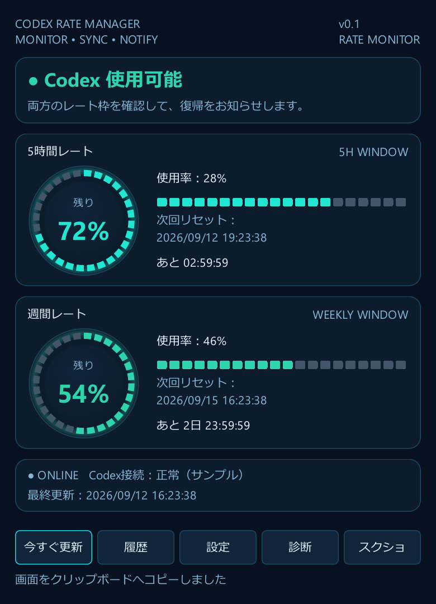
コピーに失敗した場合は「画面のコピーに失敗しました」と表示されます。メイン画面を開いて再実行してください。貼り付け先が画像の貼り付けに対応している必要があります。
05 / 起動と監視の設定
一般：起動・トレイ表示
{kind=link}
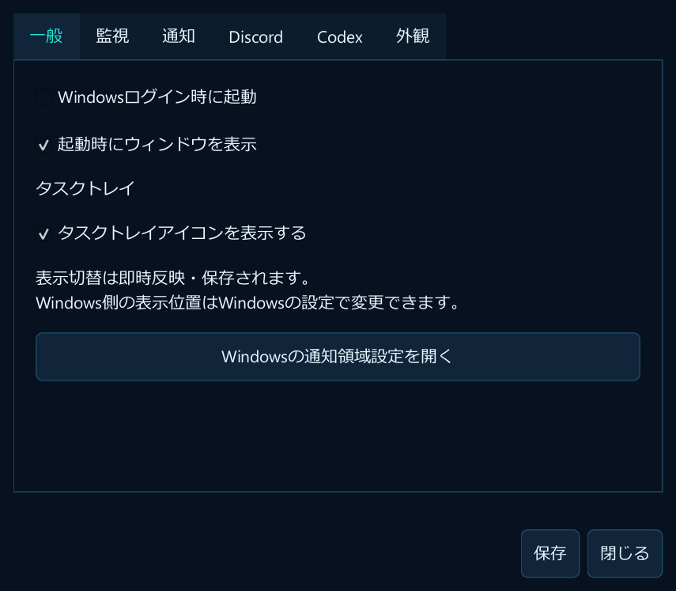
- Windowsログイン時に起動：ログイン後にアプリを自動起動します。
- 起動時にウィンドウを表示：起動直後にメイン画面を開きます。
- タスクトレイアイコンを表示する：切り替えた時点で反映・保存します。
- Windowsの通知領域設定を開く：Windows側のタスクバー設定を開きます。
監視：取得間隔と低残量の基準
{kind=link}
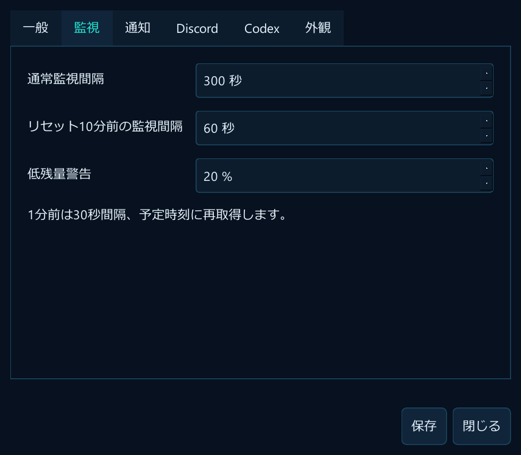
| 項目 | 既定値 | 意味 |
|---|---|---|
| 通常監視間隔 | 300秒 | 通常時に最新情報を取得する間隔。 |
| リセット10分前の監視間隔 | 60秒 | 予定時刻が近づいたときの取得間隔。 |
| 低残量警告 | 20% | 残量が少なくなったことを知らせる基準。 |
変更後は 「保存」 を押します。リセット1分前は30秒間隔となり、予定時刻にも再取得します。
06 / Windows・Discord通知を設定する
Windows通知と事前通知
{kind=link}
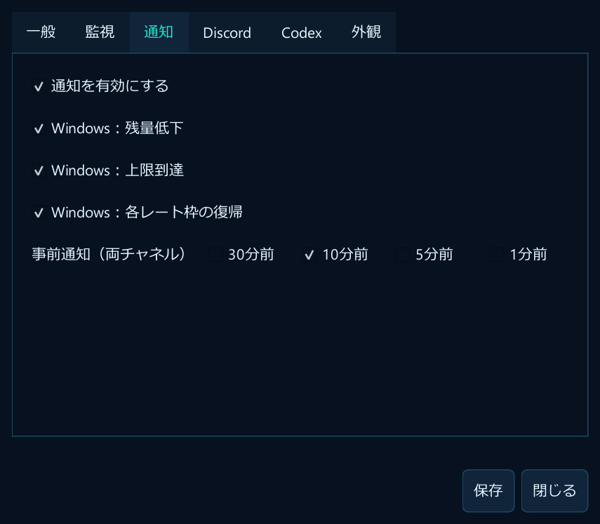
- 「設定」→「通知」を開き、「通知を有効にする」 をONにします。
- Windowsへ通知したい項目を選びます。残量低下、上限到達、各レート枠の復帰を個別に選べます。
- リセット予定前にも知らせたい場合は、事前通知の30・10・5・1分前から選びます。既定は10分前です。事前通知は両チャネル向けの設定です。
- 「保存」を押します。
Discord通知
{kind=link}
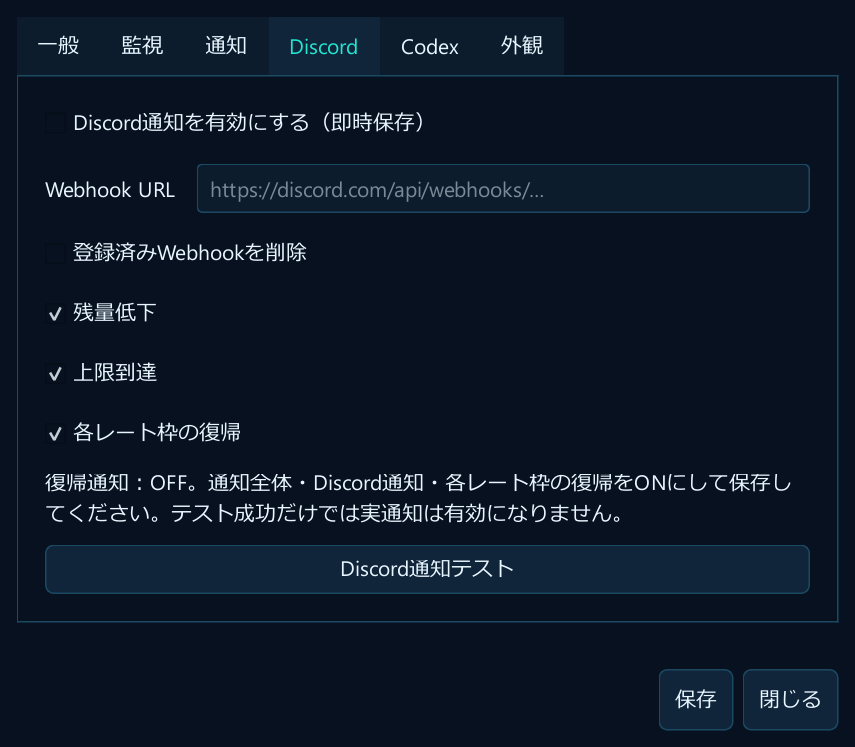
- 通知先のDiscordチャンネルで使用するWebhook URLを用意します。作成権限がない場合は、サーバー管理者へ依頼してください。
- 「設定」→「Discord」を開き、「Discord通知を有効にする（即時保存）」 をONにします。
- 「Webhook URL」へURLを貼り付け、通知したい種類を選んで 「保存」 を押します。
- 「Discord通知テスト」 を押し、通知先にテストが届くか確認します。この操作はDiscordへ実際に送信します。
登録済みURLは変更するときだけ入力します。削除する場合は「登録済みWebhookを削除」にチェックして保存します。URLは秘密情報として扱い、メッセージや画像で共有しないでください。保存時はWindowsの暗号化機能で保護されます。
07 / スキンと表示を変える
{kind=link}
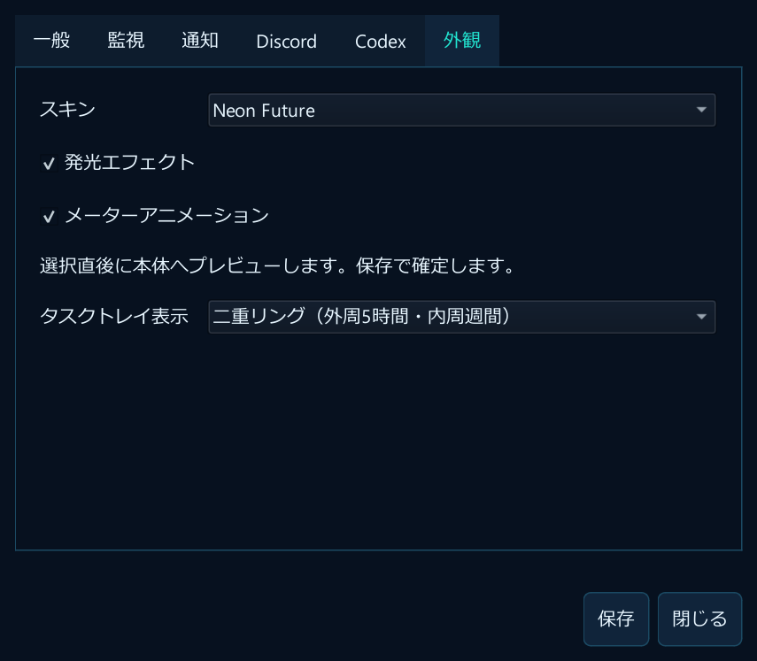
- 「設定」→「外観」を開きます。
- Neon Future、Graphite、Minimal Darkからスキンを選びます。すぐにメイン画面へプレビューされます。
- 必要に応じて発光エフェクト、メーターアニメーション、トレイ表示方式を変更します。
- 「保存」で確定します。保存せず「閉じる」と、外観プレビューは保存済みの設定へ戻ります。
{kind=link}
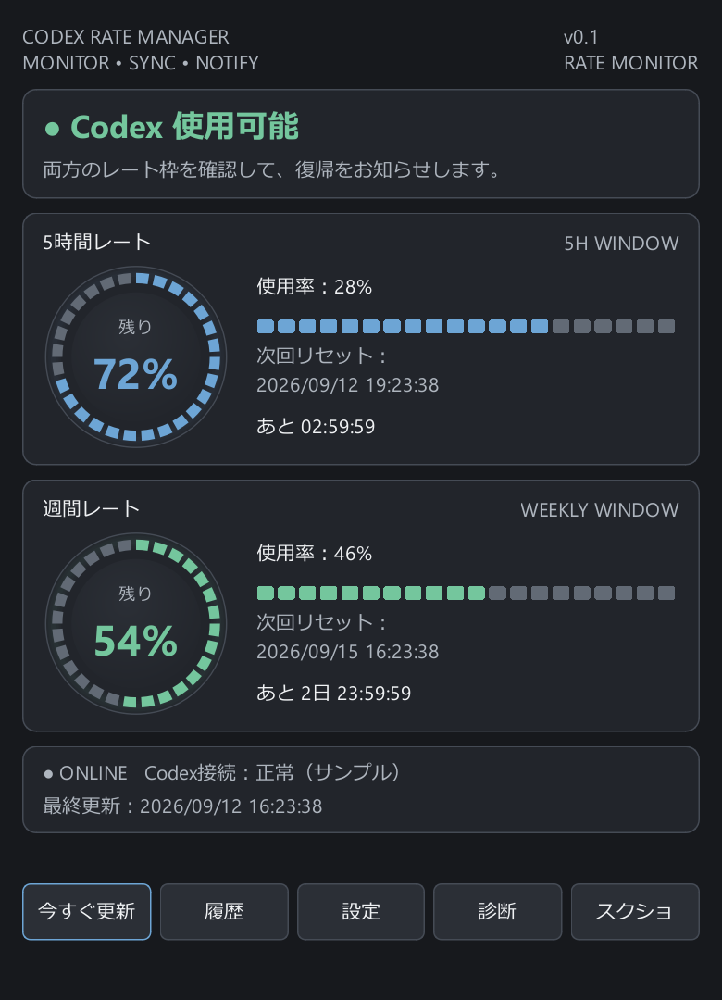
{kind=link}
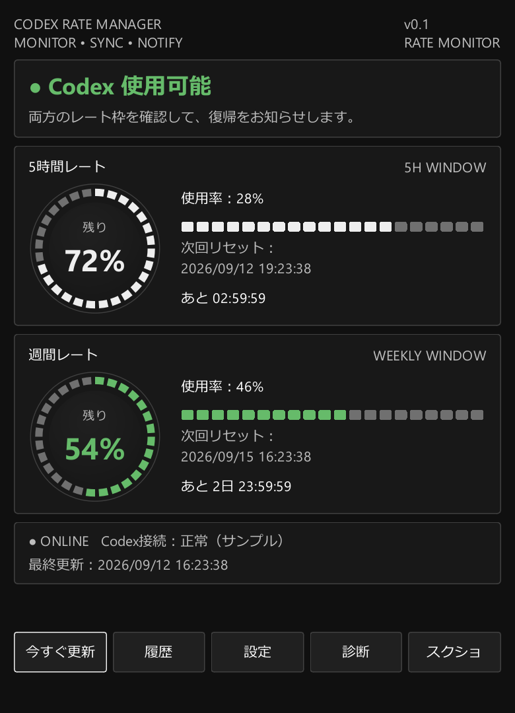
スクショには、現在画面に表示されているスキンがそのまま反映されます。
08 / 履歴と診断を確認する
履歴
{kind=link}
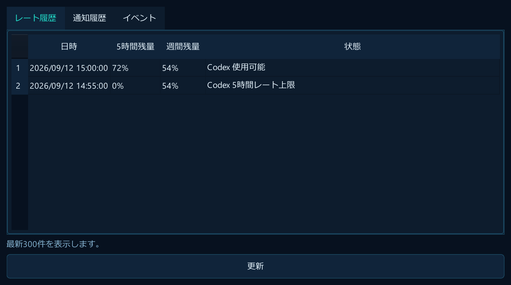
「履歴」には レート履歴・通知履歴・イベント の3タブがあります。最新300件を表示し、「更新」で再読み込みします。残量の変化や通知の結果を振り返るときに使います。
診断
{kind=link}
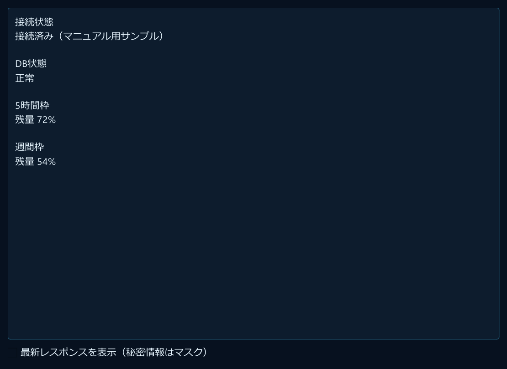
「診断」で接続状態、バージョンなどを確認できます。「最新レスポンスを表示」は詳しい確認用です。問い合わせ時は、エラーの種類や発生した操作を伝えてください。
Codexの接続先を確認する
{kind=link}
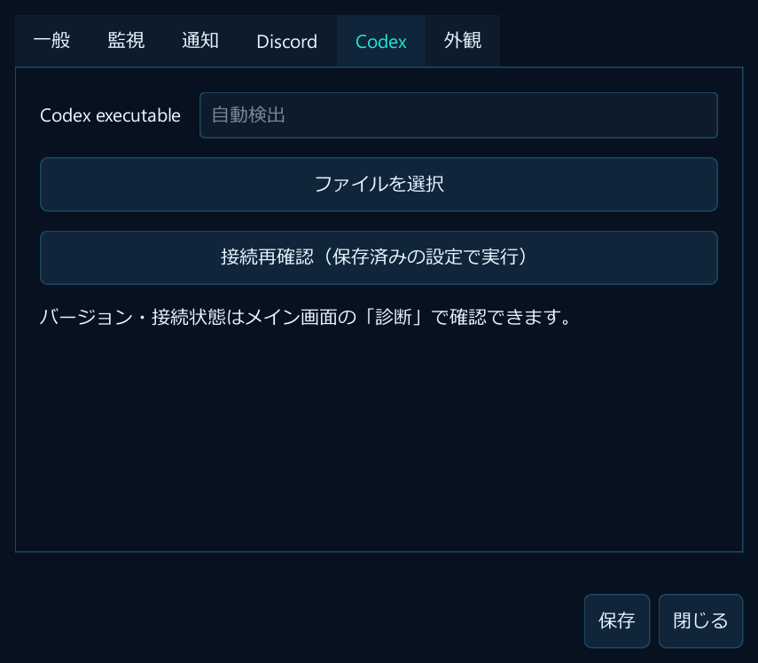
通常は実行ファイルを自動検出します。必要な場合だけ「ファイルを選択」で指定し、「保存」を押します。「接続再確認」では保存済みの設定を使用するため、変更後は先に保存してください。
09 / 困ったときは
| 症状 | 確認すること・次の操作 |
|---|---|
| Codex情報を取得できない | 普段のCodex CLIでログイン済みか確認します。設定のCodex実行ファイルを確認・保存し、「接続再確認」を押します。診断画面も確認してください。 |
| 予定時刻を過ぎても使用可能にならない | 予定時刻は目安です。「今すぐ更新」で再取得し、両方の残量と接続状態を確認してください。 |
| ウィンドウが消えた | トレイへ格納されている可能性があります。通知領域のアイコンから「Codex Rate Managerを開く」を選びます。 |
| Windows通知が見えない | アプリの通知設定と、Windows側の通知許可・集中モードを確認します。 |
| Discordのテストだけ届く | 通知全体、Discord通知、通知したい種類の3つをONにして保存します。復帰通知は実際の残量回復の確認後に送信されます。 |
| Discordのテストも届かない | Webhook URL、通知先チャンネルと権限を確認します。別のWindowsユーザーへ移した場合はURLを再登録してください。 |
| スクショを貼り付けられない | 再度コピーし、画像を受け付ける入力欄を選んで貼り付けます。まずペイントで確認すると、貼り付け先の問題か切り分けやすくなります。 |
| 自動起動できなくなった | EXEを移動した場合は、移動先で起動して自動起動をOFF→保存→ON→保存し、登録を更新します。 |
問題が続く場合は、発生した操作、画面の状態、診断情報を確認してください。ログの保存先は %LOCALAPPDATA%\CodexRateManager\logs\app.log です。共有前に、個人情報や秘密情報が含まれていないか確認してください。